Disassembly and Reassembly
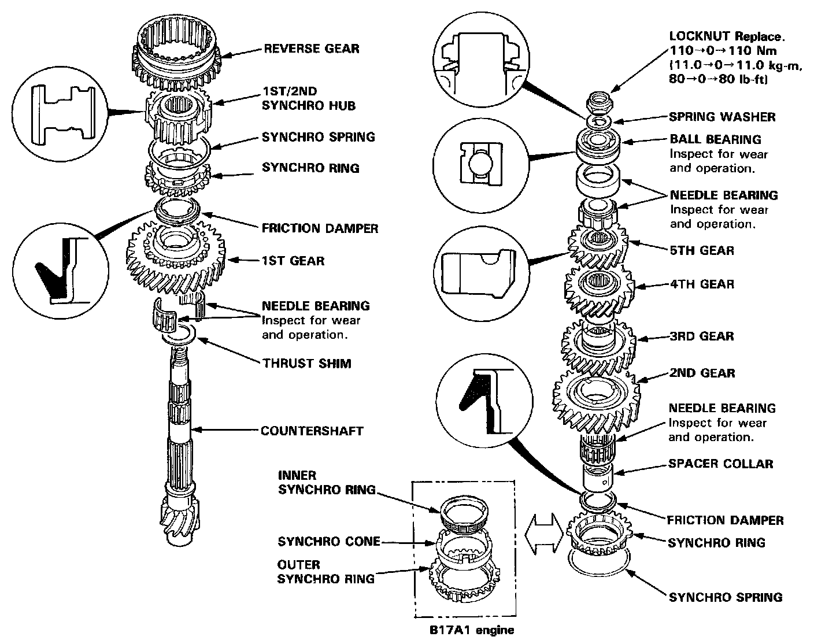
NOTE: The 4th and 5th gears are installed with a press. Prior to reassembling, clean all the parts in solvent, dry them and apply lubricant to any contact surfaces. 4th and 5th gears should be installed without lubrication using a press.
Disassembly
1. Securely clamp the countershaft assembly in a bench vise with wood blocks.
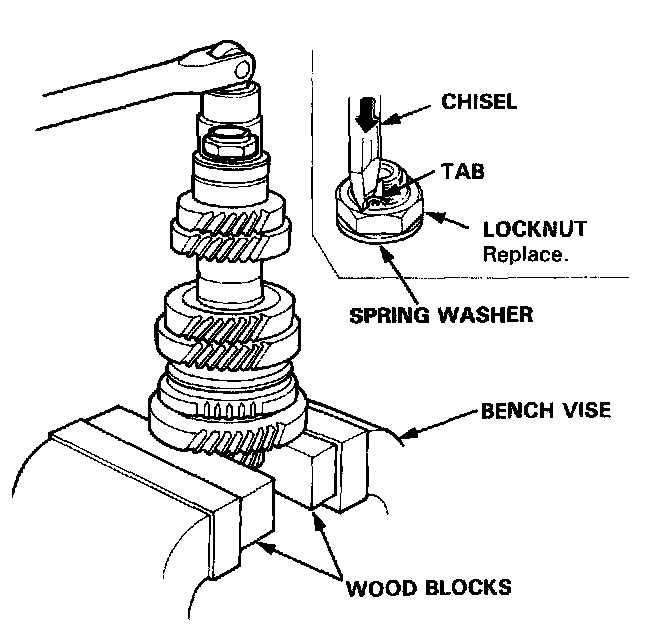
2. Raise the locknut tab from the groove of the countershaft and remove the locknut and the spring washer.
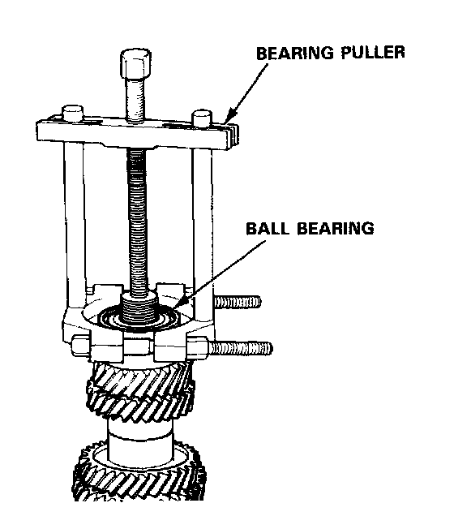
3. Remove the ball bearing using a bearing puller as shown.
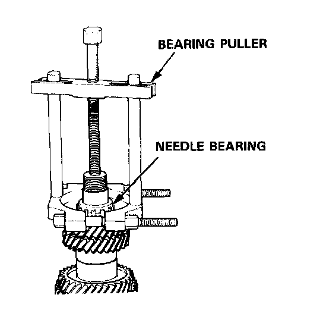
4. Remove the bearing outer race from the needle bearing, then remove the needle bearing using a bearing puller as shown in image.
CAUTION: Remove the gears using a press and steel blocks as shown. Use of a jaw-type puller can damage the gear teeth.
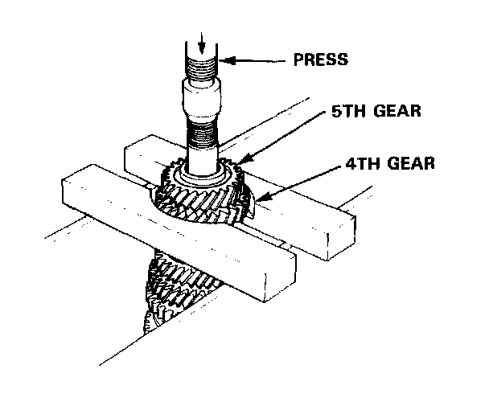
5. Support 4th gear on steel blocks as shown and press the countershaft out of 5th and 4th gears.
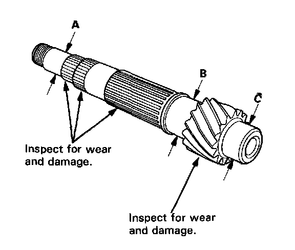
Inspection
1. Inspect the surface and bearing surface for wear and damage, then measure the countershaft at points A, B, and C.
Standard:
A: 24.980-24.993 mm (0.9835-0.9840 in)
B: 36.984-37.000 mm (1.4561-1.4567 in)
C: 33.000-33.015 mm (1.2992-1.2998 in)
Service Limit:
A: 24.940 mm (0.9819 in)
B: 36.930 mm (1.4539 in)
C: 32.950 mm(1.2972 in)
If any part of the countershaft is less than the service limit, replace it with a new one.
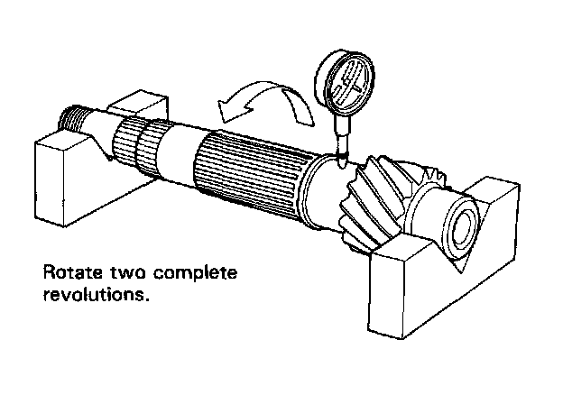
2. Inspect for runout.
Standard: 0.02 mm (0.001 in)
Service Limit: 0.05 mm (0.002 in)
NOTE: Support the countershaft at both ends as shown in image.
If the runout exceeds the service limit, replace the countershaft with a new one.
Reassembly
CAUTION:
- Press the 4th and 5th gears on the countershaft without lubrication
- When installing the 4th and 5th gears. support the shaft on steel blocks and install the gears using a press.
- Install the 4th and 5th gears with a maximum pressure of 26 kN (2,600 kg, 5.720 lbs).
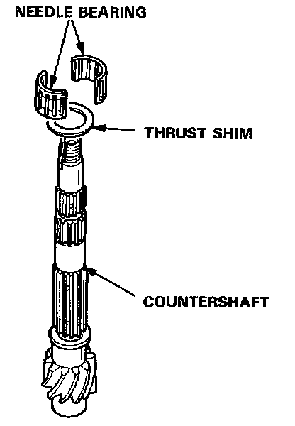
1. Install the thrust shim and needle bearing on the countershaft.
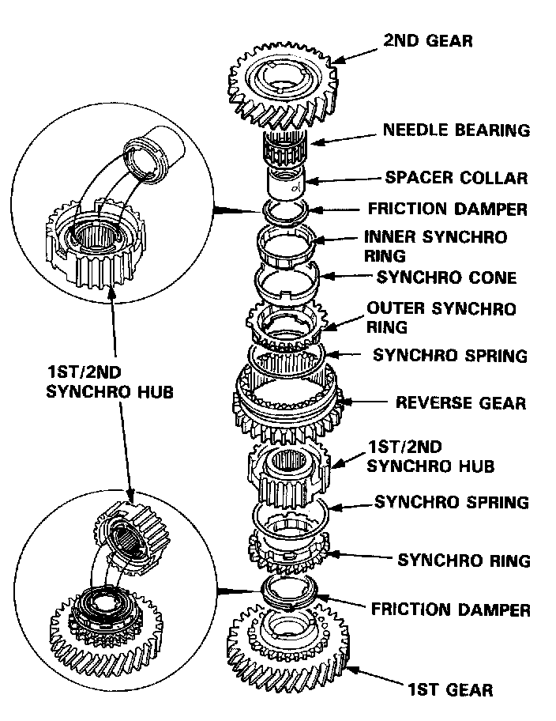
2. Assemble the parts below as shown in image.
NOTE:
- Check that the fingers of the friction damper is securely set in the grooves of the 1st/2nd synchro hub.
- B17A1 engine type is shown in image.
3. Place the parts assembled in Step 2, then install the parts on the countershaft.
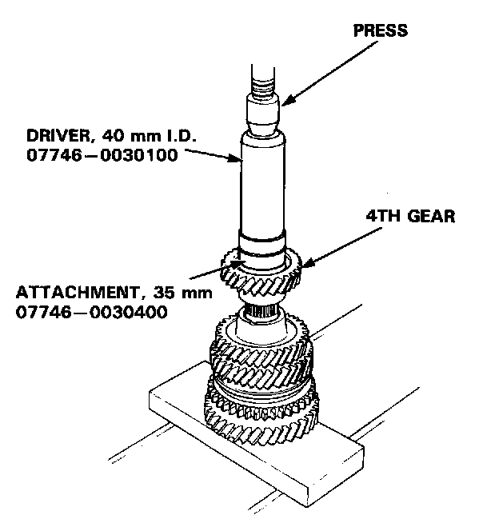
4. Support the countershaft on a steel block and install 4th gear using the special tools and a press as shown in image.
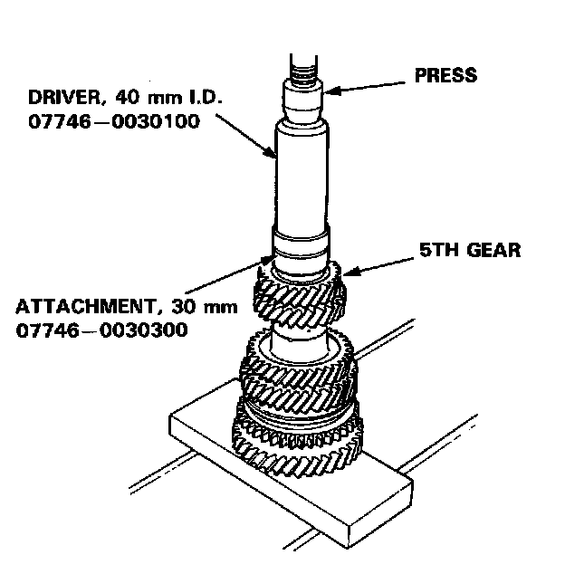
5. Install 5th gear using the special tools and a press as shown.
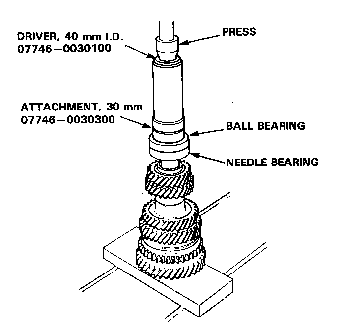
6. Install the needle bearing, then install the ball bearing using the special tools and a press as shown in image.
7. Securely clamp the countershaft assembly in a bench vise with wood blocks.
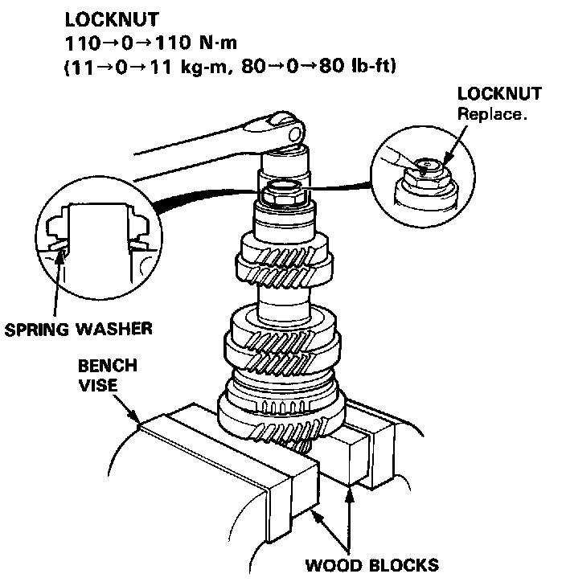
8. Install the spring washer, tighten the new locknut, then stake the locknut tab into groove.